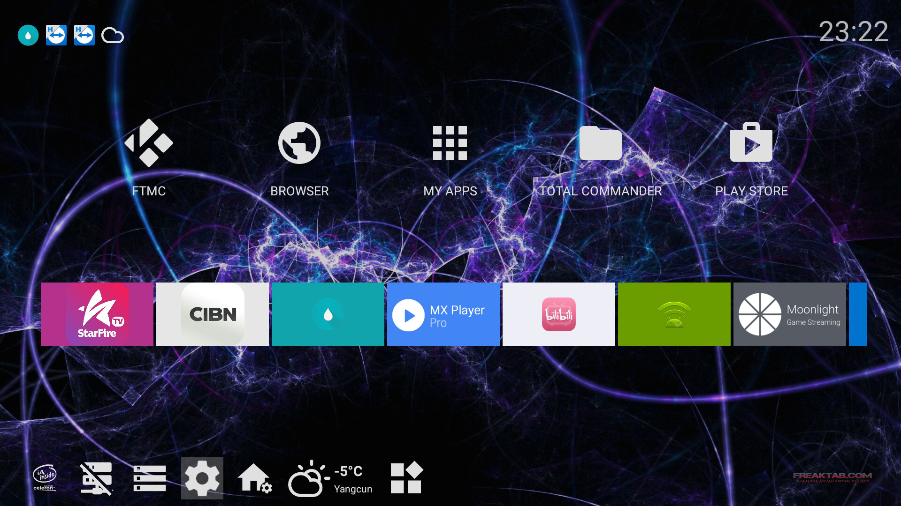
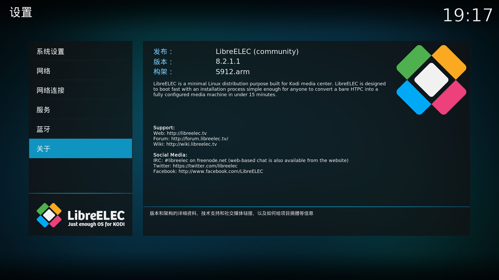
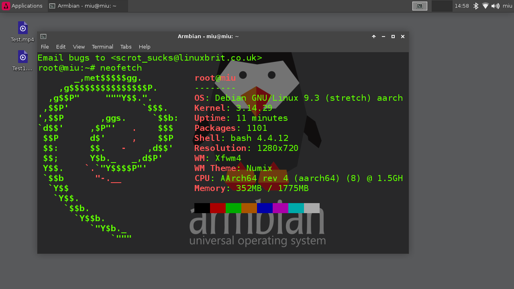
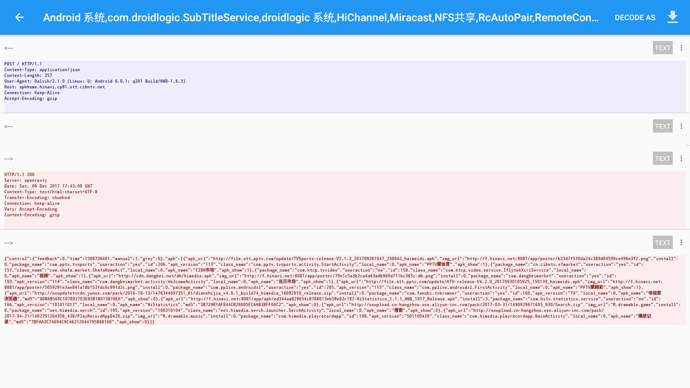

给海美迪 H7 四代刷第三方固件
前几天给盒子清数据，连上网就被自动装了 CIBN聚精彩 、CIBN聚体育。
emmmmm…
加上之前这系统用着各种不爽，像是没有通知栏啊、太丑啊、版本太低啊、刷了 Google 服务 SPMC 就打不开了之类的，所以干脆刷成别的好了。找找发现 S912 有好多包，LibreELEC、Lakka、Android 之类的。
后来我发现这玩意还能装 Linux ，真是神奇，不过 Linux 的话还是等我这盒子退休再说吧。
备份
刷什么之前都应该先做好备份，因为官方根本就没提供固件，只有卡刷包。
- 盒子执行（需要root）
/system/xbin/busybox nc -l -p 5000 -e /system/xbin/busybox dd if=/dev/block/mmcblk0 - 电脑执行
nc 盒子IP 5000 | pv -i 0.5 > mmcblk0
ps. 也可以不备份 data 分区，这样文件会比较小，也会省很多时间和空间。/system/xbin/busybox nc -l -p 5000 -e /system/xbin/busybox dd if=/dev/block/mmcblk0 bs=4096 count=658432
不过这样备份的话，恢复完要进 第三方rec 或用 LibreELEC 格式化下 data 分区，不然不能开机。
备份这段时间我们可以去下载刷机包。
其他 Android

刷机会清除全部数据，记得备份原系统和数据。
另外再备份下这两个文件，刷完再恢复。1
2
3
4# 蓝牙遥控器键值
/system/usr/keylayout/HIMEDIA.kl
# 红外遥控器键值
/system/etc/remote.conf
- 用 BootcardMaker 制作启动卡。然后插进盒子，执行
reboot update，盒子会重启升级。 - 或是用双公头 USB 线连接电脑和盒子（插靠后面的 USB 口）用 USB Burning Tool 刷写。
一些固件的下载地址
- Android 6.1 自带 Samba ，启动器带通知显示。上面的截图就是这个固件。刷完要再进 recovery 刷下帖子里的 A912(AP6255) Wifi/BT Fix ，不然 WiFi 不能用。
- Android 7.1 自带 Google 全家桶的 Android 7.1 固件。
Android TV 7.1.2 自带 Google 全家桶的 Android TV 7.1 固件。最近更新后蓝牙遥控器会失效。- Android TV 7.1.2 只有 Play 服务、商店和 YouTube，data 分区比较大，钛备份看到有 12.3 GiB 。目前在用，不过精简的有点多，DocumentsUI 都没，可以从上面的包里面提取。
- 可以自己 Google 搜索或是去 freaktab 这类的地方找。
一些问题和解决办法
- 蓝牙遥控器只能关机不能开机：按钮改成休眠后可休眠唤醒。不过盒子24小时挂着 BT 下动画片，用不着关机功能问题也不大。
- 红蓝按钮：修改
HIMEDIA.kl，把红蓝键改成别的功能（按键参考）。我这有一个改好的，红色是静音，蓝色是截图。 - 鼠标模式：安装 Mouse Toggle for Android TV ，启用无障碍，按音量减再快速按音量加开启，HOME 关闭。
- 语音：换个支持 Android TV 语音的遥控器。或者在手机上装个 Android TV Remote Control 。
前几天自带的蓝牙遥控器坏掉了，我脑抽花80大洋买了个原厂白的…现在想想还不如买个飞鼠。
LibreELEC

LibreELEC 其实就是个 kodi ，扩展比 kodi 多点。跟 Android 版的 kodi 比起来就是多了些程序，放 H265 不会花屏了。也能装 entware 之类的。
Lakka 也已经支持 S912 了，安装和 LibreELEC 差不多。
它们都可以装到 SD 卡里面，官方的安装说明写的很详细，照着做就好了。
另外这两个蓝牙遥控器也是只能关机不能开机，按钮改成休眠后可休眠唤醒。
Linux

装 Linux 的话可以直接用别人做好的镜像做启动卡，有 Debian、ArchLinux、openSUSE 和 AltLinux 的，可以去这个帖子下载。
我试了几个镜像 HDMI 都没有声音，据制作者说 4.14 内核的有声音，不过我用那个盒子开机没有信号。
- 用 dd 或是 Win32DiskImage 之类的软件把镜像写到SD卡或U盘。
- 修改文件。
a. 打开SD卡的第一分区，看看里面有没有aml_autoscript文件，没有就把s905_autoscript改名aml_autoscript。
b. 把 dtbs 里面的gxm_q201_2g.dtb改名dtb.img复制到上级目录。
c. 按需修改hdmi.sh和armbian_first_run.txt。 - 把卡插进盒子，执行
reboot update。Armbian 的root密码是1234，其他的那个帖子里面有说。 加载无线网卡驱动。
1
2
3
4
5modprobe dhd
echo dhd >> /etc/modules
# 下面的可能不需要
# modprobe cfg80211
# echo cfg80211 >> /etc/modulesDNS
1
2rm /etc/resolv.conf
echo nameserver 192.168.1.1 > /etc/resolv.conf
刷回官方（恢复备份）
- 盒子执行
/system/xbin/busybox nc -l -p 5000 -e /system/xbin/busybox dd of=/dev/block/mmcblk0 - 电脑执行
dd if=mmcblk0 | nc 盒子IP 5000
恢复的时候好多坑，在这里说一下。
如果恢复完不能开机，拔出 SD 卡和 U 盘，按住 reset 再插电源进 recovery ，官方的 rec 会自动清数据然后重启。
还是不行的话，用第三方 rec 或 LibreELEC 格式化下 data 分区。
还有一点要注意就是用 LibreELEC 或 Linux 格式化分区的时候要指定分区名。像是这样：mkfs.ext4 -L data /dev/data
官方固件一些问题的解决方法
- 没有通知栏：装 Snowball Smart Notifications 显示通知。
- 刷了 Goolge 服务包后 SPMC 打不开：不用 Google 服务或是换用 FTMC 。因为刷非海美迪官方提供的 Google 服务包会过不了 Play 商店的验证，好多软件不能安装和更新。
- 没有最近任务界面：插个飞鼠或者键盘 Alt + Tab 。
- 官方固件偷偷给用户推送软件：
- 后台偷偷安装软件的是系统自带的启动器，可以换用第三方启动器然后直接删掉或禁用自带的启动器（其实好多自带软件都可以删）。
- 后来通过抓包找到推送列表地址，也可以在 hosts 里面加上一句
127.0.0.1 apkhome.hinavi.cp81.ott.cibntv.net屏蔽。 - 屏蔽推送和广告的 hosts 。

还有一些有的没的。